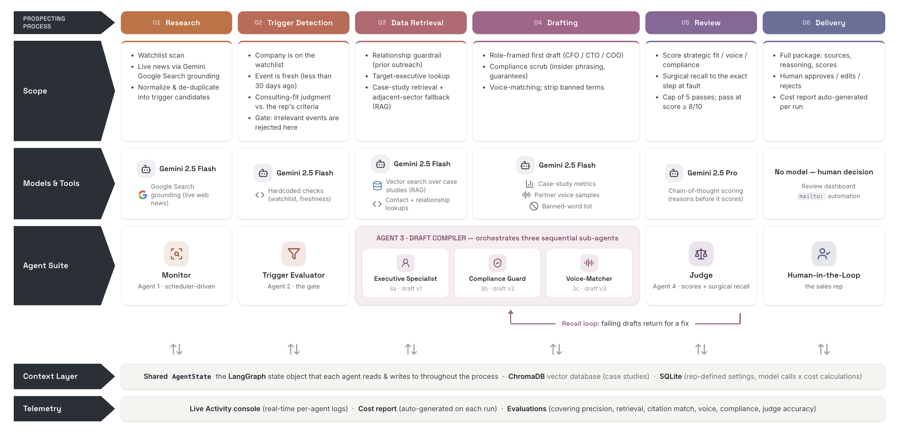
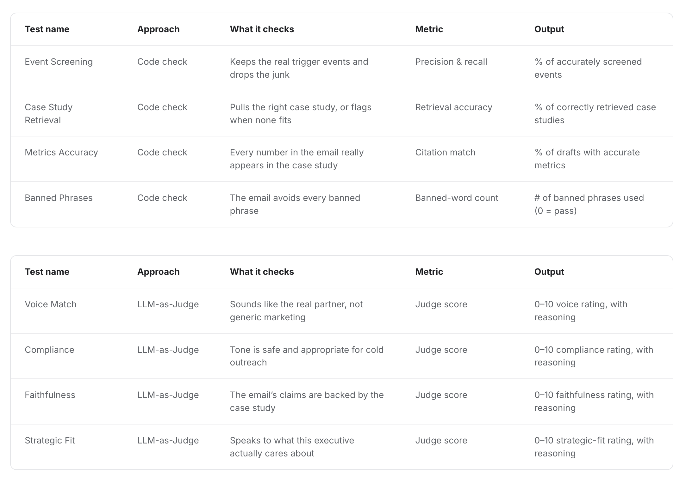
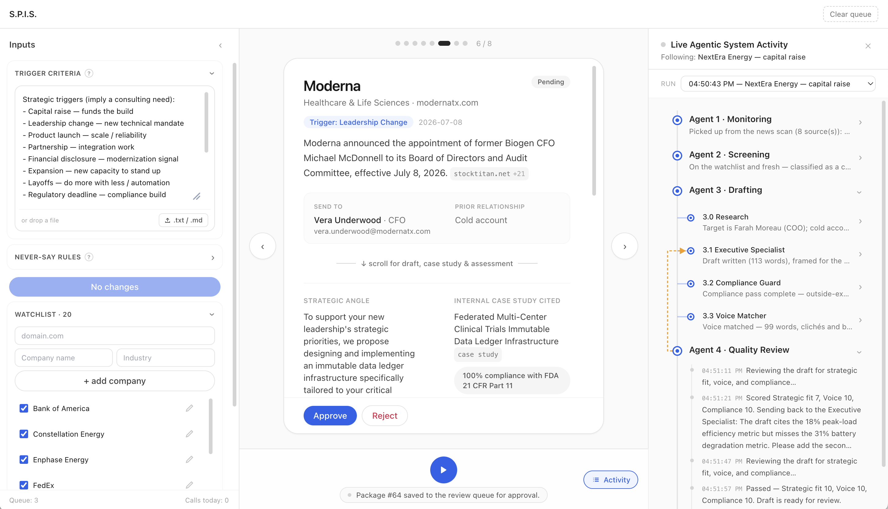

Five weeks to a deployed multi-agent system
A LangGraph-based multi-agent system for consulting sales experts, built solo in 5 weeks. User-reported time-to-draft fell from over 2 hours to about 5 minutes, and the outcomes were presented to senior stakeholders.
The problem
Consulting sales experts spend hours assembling B2B prospecting outreach communication: researching an account, matching it against the consultancy's capabilities, and drafting messages that sound like them rather than a template. Each draft took a user-reported 2-10+ hours.
Looking closer at the process revealed two distinct halves. Identifying the right client is real expertise: network-reliant, and hinging on factors no system can predict or controls. But what follows, from monitoring intent signals through account research to enriching contact data and packaging the message, mostly relies on applying rules consistently, and it ran two to ten hours per prospect. That part of prospecting is where expertise leaves its place to information gathering and packaging
The mandate was open: build something with AI that helps. What that something was (which parts of the workflow to automate, which to leave to the expert, and how to prove it worked) was mine to define. I owned the product end to end, from definition through evaluation and deployment, grounded it in interviews with 5 sales experts, and built it in 5 weeks.
Where is the line between what agents should automate and what has to stay personal for the outreach to keep working?
Constraints
| Timeline | 5 weeks from product definition to deployment, as a solo builder. |
|---|---|
| Users | Consulting sales experts with strong personal styles and no tolerance for generic AI output. |
| Technical / domain | Drafts had to be grounded in real account context; a wrong claim in outreach costs credibility with the prospect. |
| Business need | Results had to be presentable to senior stakeholders as evidence the approach works. |

Key decisions
Solo and on a five-week clock, every architectural choice was also a scoping choice. These decisions shaped what got built within my 5-week window.
A single prompt could produce a draft, but it couldn't research an account, reason about fit, and write in an expert's voice with any reliability, because each step fails differently and needs different context. Splitting the work into specialized agents orchestrated with LangGraph made each step testable and debuggable on its own, which is what made five weeks feasible.
Full automation produces outreach that reads like automation, and experts won't send what doesn't sound like them. The system automates research and structure; the expert's voice and judgment stay in the loop. That balance was the core product decision, and it's what separated this from a template generator.
Review had to happen where a mistake would be expensive: before anything reaches a prospect. The expert reviews and edits at the draft stage, where five minutes of their attention catches what agents miss, instead of auditing every intermediate step or rubber-stamping a finished send.
A 5-minute draft is worthless if it's a bad draft. The system was evaluated on both deterministic and non-deterministic criteria: citation retrieval accuracy and hallucinated metric references measured directly, and the final agent's output judged against an LLM-as-Judge setup built with DeepEval.
Multi-agent systems fail opaquely: when a draft comes out wrong, the question is always which agent went wrong and what it cost to find out. A live activity console streams per-agent logs in real time, and every run auto-generates a cost report, with settings and model-call costs tracked per rep. Observability was built as a feature rather than a debug tool; an expert reviewing a draft can see exactly which agent did what, and a stakeholder evaluating the system can see what each run costs.
How I measured success
The headline metric was user-reported time-to-draft, because time was the cost experts actually felt: the baseline of 2+ hours came from the experts themselves, and the ~5 minute result was reported the same way. Both numbers came from the same people by the same method, which keeps the comparison honest.
Time alone wasn't enough, so quality had its own evaluation layer: the evaluation suite detailed below. Interviews with the 5 experts grounded what the system needed to get right in the first place. A tool that saves two hours and produces unreliable drafts has saved nothing.
The evaluation suite
The suite covers six dimensions: trigger precision, retrieval quality, citation match, voice, compliance, and the judge itself. The deterministic dimensions are measured directly: whether every citation resolves to a real source, and whether any metric appears in a draft that doesn't exist in the retrieved data. The dimensions that resist hard rules, voice and compliance among them, are scored by the LLM-as-Judge built with DeepEval, reasoning before it scores.
The judge gets audited too. A quality gate nobody checks becomes the weakest link in the pipeline, so judge accuracy is its own eval dimension rather than an assumption. That's what lets the headline number carry weight: a draft that ships has passed the deterministic checks, cleared the judge, and the judge itself has a measured track record.

The solution
The Sales Prospecting Intelligence System (SPIS) is a LangGraph-based multi-agent pipeline that runs the rule-based half of prospecting end to end. A scheduler-driven monitor scans the watchlist and live news; a trigger evaluator acts as the gate, rejecting stale or irrelevant events before they cost anyone attention. When a trigger passes, a draft compiler orchestrates three sequential sub-agents (an executive specialist framing the message for its reader, a compliance guard scrubbing risky phrasing, and a voice-matcher aligning the draft with the expert's own writing), with every draft grounded through RAG over the consultancy's case studies rather than the model's memory.
Quality gets enforced before a human ever sees the result: an LLM judge scores each draft with chain-of-thought reasoning and recalls failing drafts to the exact step at fault, up to five passes, shipping only at 8/10 or above (Gemini 2.5 Flash runs the pipeline agents; Pro runs the judge). The expert stays in the loop at both ends, defining the watchlist and approving the send. Research and assembly are automated; voice and judgment are not.
What it was deliberately not designed to be matters just as much: not fully autonomous, because that creates trust and compliance risks in consulting sales, and not a volume accelerator, because this business runs on relationships rather than reach. It shipped as a working deployment, not a prototype. The outcomes were presented to senior stakeholders as evidence for how the consultancy could apply agentic AI to its own sales practice.

Outcomes
The ~5 minute figure counts only drafts that passed every evaluation gate.